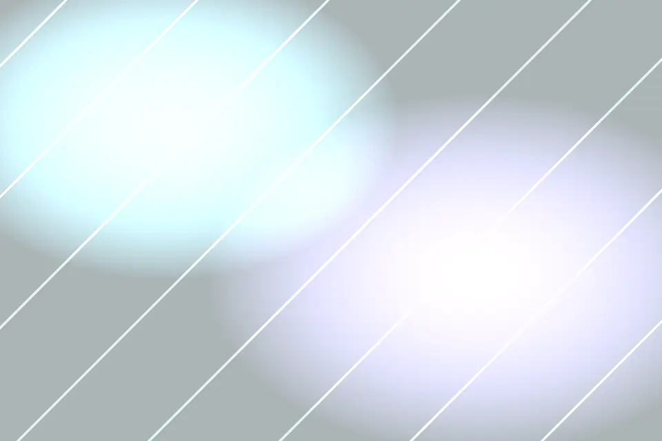

Auralume Health Lab designs glassmorphism wellness diagnostics with uncommon discipline.
A glassmorphic wellness diagnostics studio blending biomarker reviews, breath coaching, and calm digital routines for high-performing teams. Every page of this daily-built site uses original writing, semantic structure, responsive craft, and a visual system made for this brand alone.
Light Before Metrics frames a calm opening on why health data should reduce noise instead of adding pressure. At Auralume Health Lab, this idea is developed through glassmorphism wellness diagnostics and the daily realities of executive teams, clinicians, performance coaches, and individuals seeking evidence guided recovery. We look for the moment where ambition, budget, schedule, and public meaning start to disagree, because that is usually where strong design becomes valuable. Instead of handing over a decorative concept, we shape a working argument with evidence, visual clarity, and language that helps a room make decisions. The palette is informed by frosted panels, slow gradients, biometric rings, and morning vapor, not by trend decks.
3 decision checkpoints
1 practical next step

Signal Map
Signal Map frames the diagnostic layers used to connect symptoms, habits, biomarkers, and recovery windows. At Auralume Health Lab, this idea is developed through glassmorphism wellness diagnostics and the daily realities of executive teams, clinicians, performance coaches, and individuals seeking evidence guided recovery. We look for the moment where ambition, budget, schedule, and public meaning start to disagree, because that is usually where strong design becomes valuable. Instead of handing over a decorative concept, we shape a working argument with evidence, visual clarity, and language that helps a room make decisions. Each recommendation is designed for people who must explain the decision after the meeting ends.
33% clearer priorities
Care Pathways
Programs for leaders, teams, and practitioners who need practical wellness architecture.
Care Pathways frames programs for leaders, teams, and practitioners who need practical wellness architecture. At Auralume Health Lab, this idea is developed through glassmorphism wellness diagnostics and the daily realities of executive teams, clinicians, performance coaches, and individuals seeking evidence guided recovery. We look for the moment where ambition, budget, schedule, and public meaning start to disagree, because that is usually where strong design becomes valuable. Instead of handing over a decorative concept, we shape a working argument with evidence, visual clarity, and language that helps a room make decisions. We favor clear sequence, honest constraints, and details that remain useful under pressure.
Breath Index frames how guided respiratory work becomes a measurable daily reset. At Auralume Health Lab, this idea is developed through glassmorphism wellness diagnostics and the daily realities of executive teams, clinicians, performance coaches, and individuals seeking evidence guided recovery. We look for the moment where ambition, budget, schedule, and public meaning start to disagree, because that is usually where strong design becomes valuable. Instead of handing over a decorative concept, we shape a working argument with evidence, visual clarity, and language that helps a room make decisions. The engagement leaves teams with language, visuals, and priorities they can act on immediately.
Breath Index
Recovery Rooms
Recovery Rooms frames spaces and rituals designed for sleep debt, travel fatigue, and cognitive overload. At Auralume Health Lab, this idea is developed through glassmorphism wellness diagnostics and the daily realities of executive teams, clinicians, performance coaches, and individuals seeking evidence guided recovery. We look for the moment where ambition, budget, schedule, and public meaning start to disagree, because that is usually where strong design becomes valuable. Instead of handing over a decorative concept, we shape a working argument with evidence, visual clarity, and language that helps a room make decisions. The palette is informed by frosted panels, slow gradients, biometric rings, and morning vapor, not by trend decks.
7 decision checkpoints
5 practical next step
Clinician Loop
Clinician Loop frames a review system that keeps recommendations grounded in evidence and human context. At Auralume Health Lab, this idea is developed through glassmorphism wellness diagnostics and the daily realities of executive teams, clinicians, performance coaches, and individuals seeking evidence guided recovery. We look for the moment where ambition, budget, schedule, and public meaning start to disagree, because that is usually where strong design becomes valuable. Instead of handing over a decorative concept, we shape a working argument with evidence, visual clarity, and language that helps a room make decisions. Each recommendation is designed for people who must explain the decision after the meeting ends.
77% clearer priorities
Team Vitality
Workplace programs that protect energy without turning wellness into another performance demand.
Team Vitality frames workplace programs that protect energy without turning wellness into another performance demand. At Auralume Health Lab, this idea is developed through glassmorphism wellness diagnostics and the daily realities of executive teams, clinicians, performance coaches, and individuals seeking evidence guided recovery. We look for the moment where ambition, budget, schedule, and public meaning start to disagree, because that is usually where strong design becomes valuable. Instead of handing over a decorative concept, we shape a working argument with evidence, visual clarity, and language that helps a room make decisions. We favor clear sequence, honest constraints, and details that remain useful under pressure.
Quiet Technology frames digital tools shaped to be reassuring, legible, and intentionally limited. At Auralume Health Lab, this idea is developed through glassmorphism wellness diagnostics and the daily realities of executive teams, clinicians, performance coaches, and individuals seeking evidence guided recovery. We look for the moment where ambition, budget, schedule, and public meaning start to disagree, because that is usually where strong design becomes valuable. Instead of handing over a decorative concept, we shape a working argument with evidence, visual clarity, and language that helps a room make decisions. The engagement leaves teams with language, visuals, and priorities they can act on immediately.
Quiet Technology
Client Reflections
Client Reflections frames long-form quotes from people who wanted clarity more than motivational slogans. At Auralume Health Lab, this idea is developed through glassmorphism wellness diagnostics and the daily realities of executive teams, clinicians, performance coaches, and individuals seeking evidence guided recovery. We look for the moment where ambition, budget, schedule, and public meaning start to disagree, because that is usually where strong design becomes valuable. Instead of handing over a decorative concept, we shape a working argument with evidence, visual clarity, and language that helps a room make decisions. The palette is informed by frosted panels, slow gradients, biometric rings, and morning vapor, not by trend decks.
11 decision checkpoints
9 practical next step
Lab Guides
Lab Guides frames the specialists who translate data into routines people can sustain. At Auralume Health Lab, this idea is developed through glassmorphism wellness diagnostics and the daily realities of executive teams, clinicians, performance coaches, and individuals seeking evidence guided recovery. We look for the moment where ambition, budget, schedule, and public meaning start to disagree, because that is usually where strong design becomes valuable. Instead of handing over a decorative concept, we shape a working argument with evidence, visual clarity, and language that helps a room make decisions. Each recommendation is designed for people who must explain the decision after the meeting ends.
121% clearer priorities
Gentle Questions
Answers about privacy, testing cadence, coaching format, and realistic outcomes.
Gentle Questions frames answers about privacy, testing cadence, coaching format, and realistic outcomes. At Auralume Health Lab, this idea is developed through glassmorphism wellness diagnostics and the daily realities of executive teams, clinicians, performance coaches, and individuals seeking evidence guided recovery. We look for the moment where ambition, budget, schedule, and public meaning start to disagree, because that is usually where strong design becomes valuable. Instead of handing over a decorative concept, we shape a working argument with evidence, visual clarity, and language that helps a room make decisions. We favor clear sequence, honest constraints, and details that remain useful under pressure.
Begin a Lighter Baseline frames an invitation to create a healthier operating rhythm. At Auralume Health Lab, this idea is developed through glassmorphism wellness diagnostics and the daily realities of executive teams, clinicians, performance coaches, and individuals seeking evidence guided recovery. We look for the moment where ambition, budget, schedule, and public meaning start to disagree, because that is usually where strong design becomes valuable. Instead of handing over a decorative concept, we shape a working argument with evidence, visual clarity, and language that helps a room make decisions. The engagement leaves teams with language, visuals, and priorities they can act on immediately.
Begin a Lighter Baseline
Cookie preferences
We use essential storage for this banner and optional analytics-style signals to understand which pages are useful. Choose accept or reject; your choice is saved in localStorage.